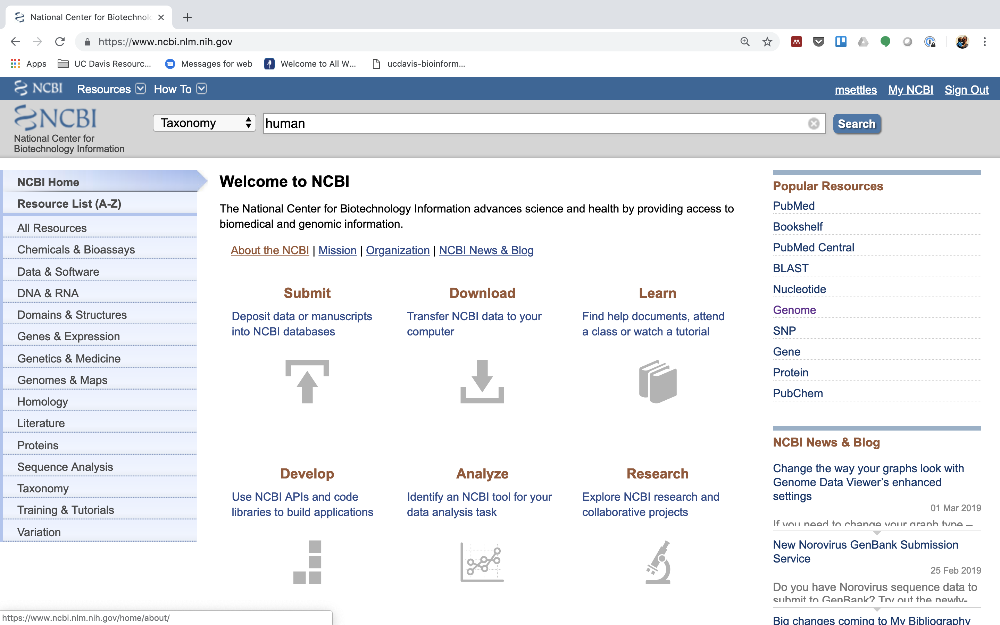
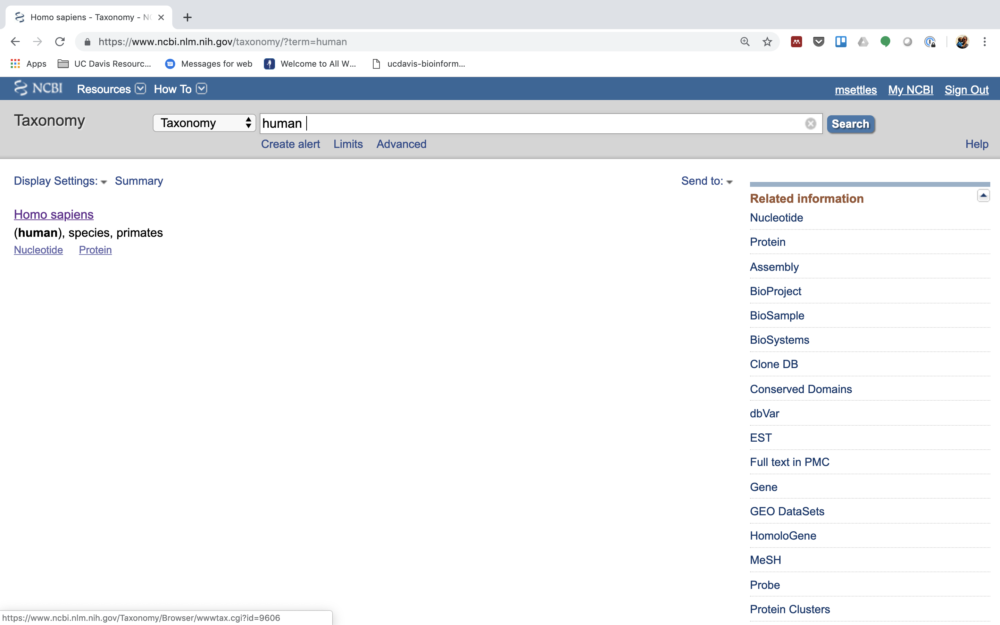
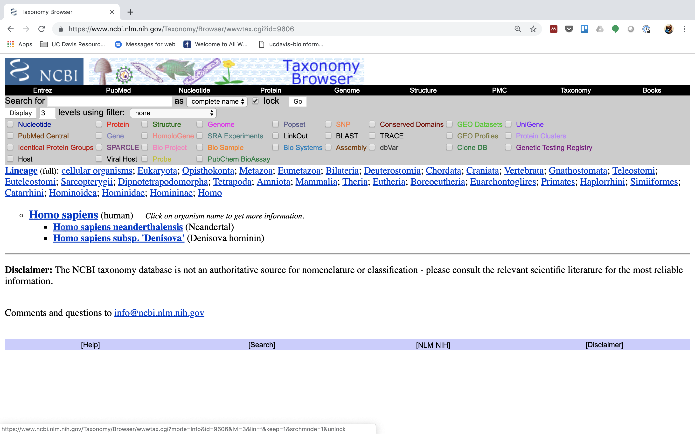
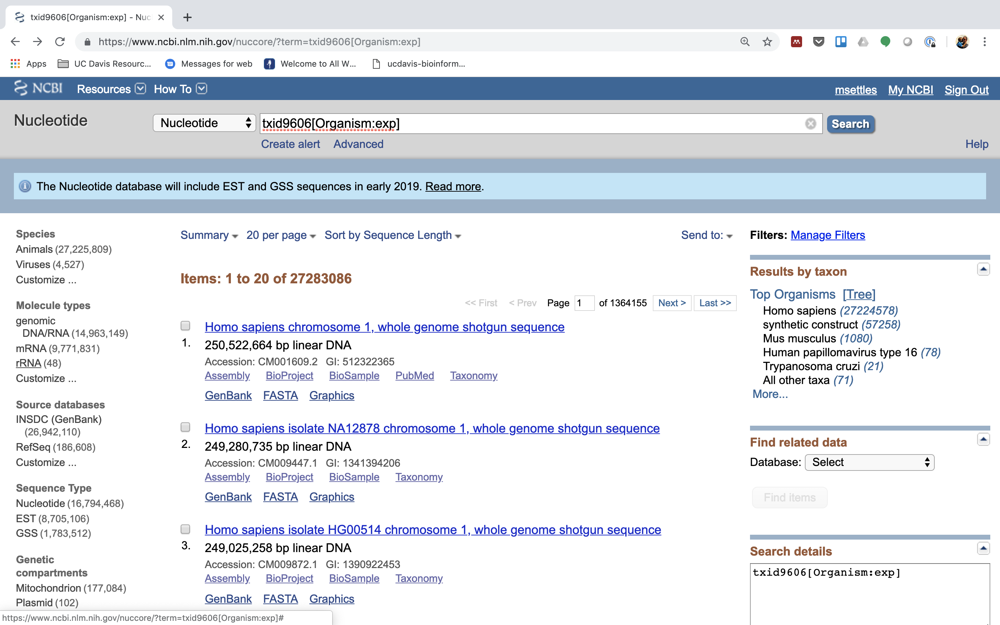
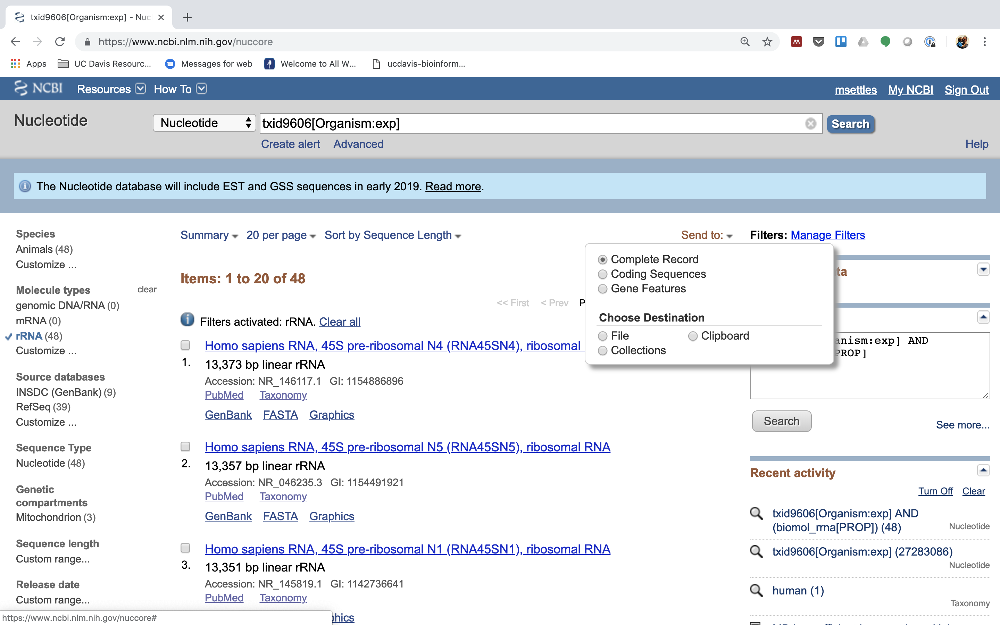
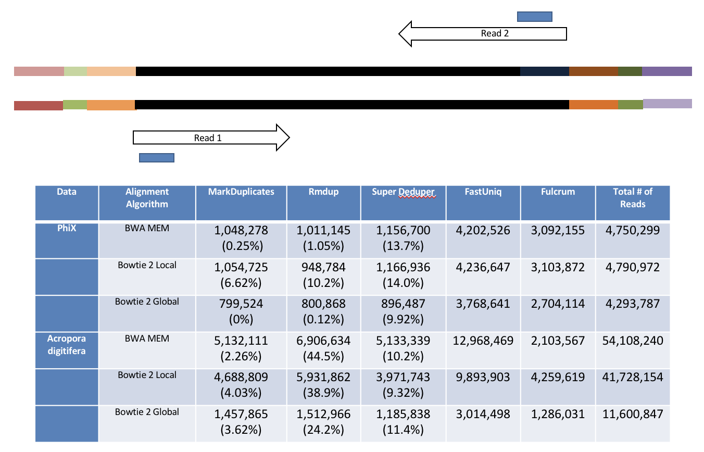
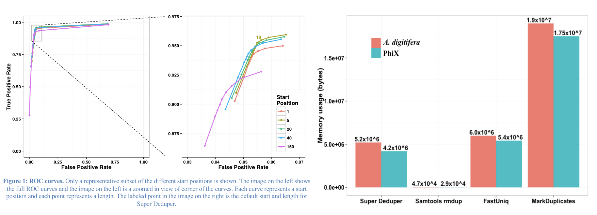

Sequence preprocessing
This document assumes project_setup has been completed.
Why preprocess reads
We have found that aggressively “cleaning” and processing reads can make a large difference to the speed and quality of mapping and assembly results. Cleaning your reads means, removing reads/bases that are:
- Unwanted sequence (Ex. polyA tails in RNAseq data)
- artificially added onto sequence of primary interest (vectors, adapters, primers)
- join short overlapping paired-end reads
- low quality bases
- originate from PCR duplication
- not of primary interest (contamination)
Preprocessing also produces a number of statistics that are technical in nature that should be used to evaluate “experimental consistency”.
Many read preprocessing strategies over time
- Identify and remove contaminant and vector reads.
- Reads which appear to fully come from extraneous sequence should be removed.
- Quality trim/cut.
- “End” trim a read until the average quality > Q (Lucy).
- Remove any read with average quality < Q.
- Eliminate singletons/duplicates.
- If you have excess depth of coverage, and particularly if you have » x-fold coverage where x is the read length, then eliminating singletons is a nice way of dramatically reducing the number of candidate error-prone reads.
- Reads which appear the same (particularly paired-end) are often more likely PCR duplicates and therefor redundant reads.
- Eliminate all reads (pairs) containing an “N” character.
- If you can afford the loss of coverage, you might throw away all reads containing Ns.
- Identify and trim off adapter and barcodes if present.
- Believe it or not, the software provided by Illumina, either does not look for (default), or does a mediocre job of, identifying adapters and removing them.
** Many technical things happen between original sample and data, preprocessing is working backwards through that process to get as close as we can to original sample **

RNAseq preprocessing workflow
- Remove contaminants (at least PhiX).
- Remove PCR duplicates.
- Identify rRNA proportion.
- Join and potentially extend, overlapping paired end reads
- If reads completely overlap they will contain adapter, remove adapters
- Identify and remove any adapter dimers present
- Trim sequences (5’ and 3’) by quality score (I like Q20)
- Cleanup
- Remove any reads that are less then the minimum length parameter
- Run a polyA/T trimmer (optional)
- Produce preprocessing statistics
HTStream - preprocessing application
Can be downloaded from here. Fast C++ implementation, designed to have discreet applications that can be pipelined together using unix piping. We hope in the long run to include any and all needed preprocessing routines. Includes:
- hts_AdapterTrimmer - identify and remove adapter sequences
- hts_NTrimmer - extract the longest subsequence with no Ns
- hts_PolyATTrim - identify and remove polyA/T sequence (least robust algorithm)
- hts_SeqScreener - identify and remove/keep/count contaminants (default phiX)
- hts_SuperDeduper - identify and remove PCR duplicates
- hts_CutTrim - discreet 5’ and/or 3’ basepair trimming
- hts_Overlapper - Overlap paired end reads (cutting off adapters when present)
- hts_QWindowTrim - 5’ and/or 3’ prime quality score trimming using windows
- hts_Stats - compute read stats
1. Let’s run the first step of our HTStream preprocessing pipeline, which is always to gather basic stats on the read files. For now, we’re only going to run one sample through the pipeline.
1a. So let’s first take a small subsample of reads, just so our trial run through the pipeline goes really quickly.
cd /share/workshop/$USER/rnaseq_example
mkdir HTS_testing
cd HTS_testing
zcat ../00-RawData/SampleAC1/SampleAC1_L3_R1.fastq.gz | head -400000 | gzip > SampleAC1.subset_R1.fastq.gz
zcat ../00-RawData/SampleAC1/SampleAC1_L3_R2.fastq.gz | head -400000 | gzip > SampleAC1.subset_R2.fastq.gz
ls
So we zcat (uncompress and send to screen), pipe to head (param -400000) then pipe to gzip to recompress and name our files subset.
How many reads are we going to analyze in our subset?
1b. Now we’ll run our first preprocessing step … hts_Stats, first loading the module and then looking at help.
cd /share/workshop/$USER/rnaseq_example/HTS_testing
module load htstream/1.1.0
hts_Stats --help
So now lets run hts_Stats and look at the output.
hts_Stats -1 SampleAC1.subset_R1.fastq.gz \
-2 SampleAC1.subset_R2.fastq.gz \
-L SampleAC1.stats.log -f SampleAC1.stats
What parameters did we use, what do they do?
Lets take a look at the output of stats
ls -lah
Which files were generated from hts_Stats?
Lets look at the file SampleAC1.stats.log
cat SampleAC1.stats.log
The logs generated by htstream are in JSON format, like a database format but meant to be readable.
2. Next we are going to screen from ribosomal RNA (rRNA).
Ribosomal RNA can make up 90% or more of a typical total RNA sample. Most library prep methods attempt to reduce the rRNA representation in a sample, oligoDt binds to polyA tails to enrich a sample for mRNA, where Rabo-Depletion binds rRNA sequences to deplete the sample of rRNA. Neither technique is 100% efficient and so knowing the relative proportion of rRNA in each sample can be helpful.
Can screen for rRNA in our sample to determine rRNA efficiency.
2a. Before we do so we need to find sequences of ribosomal RNA to screen against.
We will use these sequences to identify rRNA in our reads, which are from human. One way to do that is to go to NCBI and search for them.
1.) First, go to NCBI and in the Search dropdown select “Taxonomy” and search for “human”.

2.) Click on “Homo sapiens”.

3.) Click on “Homo sapiens” again.

4.) Click on the “Subtree links” for Nucleotide

5.) Under Molecule Types, click on “rRNA” (left hand side).

6.) Click on “Send”, choose “File”, choose Format “FASTA”, and click on “Create File”.


Save this file to your computer, and rename it to ‘human_rrna.fasta’.
Now, make a directory in your “rnaseq_example” directory called “References”:
mkdir /share/workshop/$USER/rnaseq_example/References
Upload your human_rrna.fasta file to the ‘References’ directory on the cluster using either scp or FileZilla. Or if you feel like ‘cheating’, just copy/paste the contents of human_rrna.fa using nano into a file named /share/workshop/$USER/rnaseq_example/References/human_rrna.fasta
nano /share/workshop/$USER/rnaseq_example/References/human_rrna.fasta
paste contents of human_rrna.fa and save
2b. Lets look for ribosomal rna, but not remove, so just count the occurrences.
First, view the help documentation for hts_SeqScreener
cd /share/workshop/$USER/rnaseq_example/HTS_testing
hts_SeqScreener -h
What parameters are needed to 1) provide a reference to hts_SeqScreener and 2) count, and not screen occurrences?
hts_SeqScreener -1 SampleAC1.subset_R1.fastq.gz \
-2 SampleAC1.subset_R2.fastq.gz \
-s ../References/human_rrna.fasta -r -L SampleAC1.rrna.log -f SampleAC1.rrna
Which files were generated from hts_SeqScreener?
Lets look at the file SampleAC1.rrna.log?
What do you notice about the SampleAC1.rrna.log?
How many reads were identified as rrna?
3. The power of htstream is the ability to stream reads through multiple programs using pipe’s.
By streaming reads through programs processing will be much quicker, each read is read in only once (written only once), and use significantly less storage as there are no intermediate files. It can do this by streaming a tab-delimited format called tab6.
Single end reads are 3 columns:
read1id read1seq read1qual
Paired end reads are 6 columns:
read1id read1seq read1qual read2id read2seq read2qual
So lets first run hts_Stats and then hts_SeqScreener in a streamed fashion.
cd /share/workshop/$USER/rnaseq_example/HTS_testing
hts_Stats -1 SampleAC1.subset_R1.fastq.gz \
-2 SampleAC1.subset_R2.fastq.gz \
-L SampleAC1.streamed.log |
hts_SeqScreener -A -L SampleAC1.streamed.log \
-r -s ../References/human_rrna.fasta -f SampleAC1.streamed
Note the pipe between the two applications!
What new parameters did we use here?
What parameter is SeqScreener using that specifies how reads are input?
Lets look at the file SampleAC1.streamed.log?
4. A RNAseq preprocessing pipeline
- hts_Stats: get stats on raw reads
- hts_SeqScreener: screen out (remove) phiX
- hts_SeqScreener: screen for (count) rrnra
- hts_SuperDeduper: identify and remove PCR duplicates
- hts_AdapterTrimmer: identify and remove adapter sequence
- hts_QWindowTrim: remove poor quality sequence
- hts_NTrimmer: remove any remaining N characters
- hts_CutTrim: use to remove all reads < 50bp
- hts_Stats: get stats out output reads
4a. Why screen for phiX?
PhiX is a common control in Illumina runs, and facilities may not tell you if/when PhiX has been spiked in since it does not have a barcode, so in theory should not be in your data.
However:
- When I know PhiX has been spiked in, I find sequence every time
- [update] When dual matched barcodes are used, then near zero phiX reads identified.
- When I know PhiX has not been spiked in, I do not find sequence
For RNAseq and variant analysis (any mapping based technique) it is not critical to remove, but for sequence assembly it is. I think its better safe than sorry and screen for it every time.
4b. Removing PCR duplicates with hts_SuperDeduper.
Removing PCR duplicates can be controversial for RNAseq, but I’m in favor of it. It tells you alot about the original complexity of each sample and potential impact of sequencing depth.
**However, I would never do PCR duplicate removal on single-end reads!**

Super Deduper only uses a small portion of the reads to identify duplicates.

We calculated the Youden Index for every combination tested and the point that acquired the highest index value (as compared to Picard MarkDuplicates) occurred at a start position at basepair 5 and a length of 10bp (20bp total over both reads). Though defaults in hts_SuperDeduper are start position at basepair 10 and a length of 10bp.
4c. Adapter trimming by overlapping reads.
Consider the three scenarios below
Insert size > length of the number of cycles

hts_AdapterTrimmer product: original pairs
hts_Overlapper product: original pairs
Insert size < length of the number of cycles (10bp min)

hts_AdapterTrimmer product: original pairs
hts_Overlapper product: extended, single
Insert size < length of the read length

hts_AdapterTrimmer product: adapter trimmed, pairs
hts_Overlapper product: adapter trimmed, single
Both hts_AdapterTrimmer and hts_Overlapper employ this principle to identify and remove adapters for paired-end reads. For paired-end reads the difference between the two are the output, as overlapper produces single-end reads when the pairs overlap and adapter trimmer keeps the paired end format. For single-end reads, adapter trimmer identifies and removes adapters by looking for the adapter sequence, where overlapper just ignores single-end reads (nothing to overlap).
4d. Q-window trimming.
As a sequencing run progresses the quality scores tend to get worse, so its common to trim of the worst quality bases.

This is how reads commonly look, the start at “good” quality, increase to “excellent” and degrade to “poor”, with R2 always looking worse (except when they don’t) than R1 and get worse as the number of cycles increases.
hts_QWindowTrim trim 5’ and/or 3’ end of the sequence using a windowing (average quality in window) approach.
4e. what does all this preprocessing get you
Comparing star mapping with raw and preprocessed reads

5. Lets put it all together
hts_Stats -L SampleAC1_htsStats.log -1 SampleAC1.subset_R1.fastq.gz -2 SampleAC1.subset_R2.fastq.gz | \
hts_SeqScreener -A -L SampleAC1_htsStats.log | \
hts_SeqScreener -s ../References/human_rrna.fasta -r -A -L SampleAC1_htsStats.log | \
hts_SuperDeduper -e 25000 -A -L SampleAC1_htsStats.log | \
hts_AdapterTrimmer -n -A -L SampleAC1_htsStats.log | \
hts_QWindowTrim -n -A -L SampleAC1_htsStats.log | \
hts_NTrimmer -n -A -L SampleAC1_htsStats.log | \
hts_CutTrim -n -m 50 -A -L SampleAC1_htsStats.log | \
hts_Stats -A -L SampleAC1_htsStats.log -f SampleAC1.htstream
Note the patterns:
- In the first routine we use -1 and -2 to specify the original reads.
- In the final routine -f fastq prefix to write out new preprocessed reads.
- For the log, we specify -L with the same log file name for all routines, and use -A for the second routine onward to append log output, generating a single log file at the end.
- All other parameters are algorithm specific, can review using –help
Review the final json output, how many reads do we have left?
Confirm that number by counting the number of reads in the final output files.
How many adapters did we detect, cut off?
How many PCR duplicates were there?
Anything else interesting?
6. We can now run the preprocessing routine across all samples on the real data using a SLURM script, hts_preproc.slurm, that we should take a look at now.
cd /share/workshop/$USER/rnaseq_example # We'll run this from the main directory
wget https://raw.githubusercontent.com/ucdavis-bioinformatics-training/2019_August_UCD_mRNAseq_Workshop/master/scripts/hts_preproc.slurm
less hts_preproc.slurm
When you are done, type “q” to exit.
After looking at the script, lets make a slurmout directory for the output to go and let’s run it.
mkdir slurmout
sbatch hts_preproc.slurm # moment of truth!
We can watch the progress of our task array using the ‘squeue’ command. Takes about 30 minutes to process each sample.
squeue -u msettles # use your username
Quality Assurance - Preprocessing statistics as QA/QC.
Beyond generating “better” data for downstream analysis, cleaning statistics also give you an idea as to the original quality and complexity of the sample, library generation, and sequencing quality.
This can help inform you of how you might change your procedures in the future, either sample preparation, or in library preparation.
I’ve found it best to perform QA/QC on both the run as a whole (poor samples can affect other samples) and on the samples themselves as they compare to other samples (BE CONSISTENT).
Reports such as Basespace for Illumina, are great ways to evaluate the run as a whole, the sequencing provider usually does this for you.
PCA/MDS plots of the preprocessing summary are a great way to look for technical bias across your experiment. Poor quality samples often appear as outliers on the MDS plot and can ethically be removed due to identified technical issues.
1. Let’s make sure that all jobs completed successfully.
Lets first check all the “htstream_%*.out” and “htstream_%*.err” files:
cd /share/workshop/$USER/rnaseq_example
cat slurmout/htstream_*.out
Look through the output and make sure you don’t see any errors. Now do the same for the err files:
cat slurmout/htstream_*.err
Also, check the output files. First check the number of forward and reverse output files (should be 16 each):
cd 01-HTS_Preproc
ls */*R1* | wc -l
ls */*R2* | wc -l
Check the sizes of the files as well. Make sure there are no zero or near-zero size files and also make sure that the size of the files are in the same ballpark as each other:
ls -lh *
If, for some reason, your jobs did not finish or something else went wrong, please let one of us know and we will help.
IF for some reason it didn’t finish, is corrupted or you missed the session, you can copy over a completed copy
cp -r /share/biocore/workshops/2019_August_RNAseq/HTS_testing /share/workshop/$USER/rnaseq_example/.
cp -r /share/biocore/workshops/2019_August_RNAseq/01-HTS_Preproc /share/workshop/$USER/rnaseq_example/.
cp /share/biocore/workshops/2019_August_RNAseq/summary_hts.txt /share/workshop/$USER/rnaseq_example/.
2. Let’s take a look at the differences between the input and output files. First look at the input file:
cd /share/workshop/$USER/rnaseq_example
zless 00-RawData/SampleAC1/SampleAC1_L3_R1.fastq.gz
Let’s search for the adapter sequence. Type ‘/’ (a forward slash), and then type AGATCGGAAGAGCACACGTCTGAACTCCAGTCAC (the first part of the forward adapter). Press Enter. This will search for the sequence in the file and highlight each time it is found. You can now type “n” to cycle through the places where it is found. When you are done, type “q” to exit.
Now look at the output file:
zless 01-HTS_Preproc/SampleAC1/SampleAC1_R1.fastq.gz
If you scroll through the data (using the spacebar), you will see that some of the sequences have been trimmed. Now, try searching for AGATCGGAAGAGCACACGTCTGAACTCCAGTCAC again. You shouldn’t find it (adapters were trimmed remember), but rarely is anything perfect. You may need to use Control-C to get out of the search and then “q” to exit the ‘less’ screen.
Lets grep for the sequence and count occurrences
zcat 00-RawData/SampleAC1/SampleAC1_L3_R1.fastq.gz | grep AGATCGGAAGAGCACACGTCTGAACTCCAGTCAC | wc -l
zcat 01-HTS_Preproc/SampleAC1/SampleAC1_R1.fastq.gz | grep AGATCGGAAGAGCACACGTCTGAACTCCAGTCAC | wc -l
What is the reduction in adapters found?
3. QA/QC Summary table of the json files.
I’ve created a small R script to read in each json file, pull out some relevant stats and write out a table for all samples.
cd /share/workshop/$USER/rnaseq_example # We'll run this from the main directory
wget https://raw.githubusercontent.com/ucdavis-bioinformatics-training/2019_August_UCD_mRNAseq_Workshop/master/scripts/summarize_stats.R
module load R
R CMD BATCH summarize_stats.R
cat summary_hts.txt
4. Transfer summarize_stats.txt to your computer using scp or winSCP, or copy/paste from cat [sometimes doesn’t work],
For scp try, In a new shell session on your laptop. NOT logged into tadpole.
mkdir ~/rnaseq_workshop
cd ~/rnaseq_workshop
scp your_username@tadpole.genomecenter.ucdavis.edu:/share/workshop/your_username/rnaseq_example/summary_hts.txt .
Open in excel (or excel like application), you may have to move the header column 1 cell to the right, and lets review.
Any problematic samples?
Anything else worth discussing?
Scripts
slurm script for preprocessing using slurm task array and htstream
shell script for preprocessing using bash loop and htstream.
R script to produce summary table, assumes exact htstream operations and order as described above.